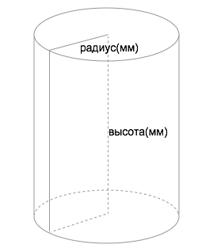

Выбор катализатора
Катализатор?
- блочныйстационарный гетерогенный катализатор в виде проницаемого керамического блока для жидкофазного или газофазного процессов
Носитель?
- гаммаГамма оксид алюминия (ɤ-Al2O3) используется для развития/увеличения удельной поверхности. Слабокислая поверхность/носитель. Размер и форма микропор регулируется.
- цирконНанесенный сульфатированный диоксид циркония (ZrO2) используется для модифицирования поверхности и придания сверхкислых свойств носителю.
- карбонНанесенный углерод используется для существенного увеличения поверхности и придания ярковыраженных основных свойств носителю.
- циолитНанесенный цеолит марки ZSM-5,10 используется для придания специфических свойств носителю, таких как высокая селективность/избирательность.
Носитель?
- гаммагамма керамический композит - (ɤ-Al2O3) используется для развития/увеличения удельной поверхности. Слабокислая поверхность/носитель.
- цирконЦКК - кирконий керамический композит - диоксид циркония (ZrO2) используется для модифицирования поверхности и придания сверхкислых свойств носителю.
- карбонУКК углерод керамический композит - используется для существенного увеличения поверхности и придания ярковыраженных основных свойств носителю
Размер?
- цилиндрическая формацилиндрическая форма катализатора подходит для проточных реакторов, а так же для емкостных, при условии использования специальной мешалки с корзиной.
- прямоугольная формапрямоугольная и сегментированная форма катализатора подходит для прямоугольных реакторов и реакторов с диаметром свыше 300мм.
Размер?
- 20x20мм
- 20x20мм
- 30x30мм
- 30x50мм
- 50x25мм
- 50x50мм
- 50x100мм
- 100x50мм
- 100x100мм
- 150x100мм
Размер?
- 20x20х20мм
- 30x30х20мм
- 30x40х420мм
- 75x50х20мм
- 75x75х20мм
- 100x50х20мм
- 100x100х20мм
Ячейка?
- 10ppi - 3-5ммподходит для жидкофазных процессов
- 20ppi - 1-2,5ммподходит как жидкофазных так и газофазных процессов
- 30ppi - 0,5-1ммподходит для газофазных процессов.
Дисперсность?
- 50-100 мкм
- 100-150 мкм
- 150-200 мкм
- 500-1000 мкм
- 1-2 мм
- 2-5 мм
Металл?
- Pd
Металл?
- 5%
- 10%
- 15%
- 20%
- 0.2%
- 0.5%
- 1%
- 1.5%
- 2%
- 2.5%
- 3%
- 3.5%
- 4%
- 4.5%
- 5%
- 0.5%
- 1%
- 5%
- 10%
Упаковка?
- 1г
- 5г
- 10г
- 25г
- 50г
- 100г
- 500г
- 1000г